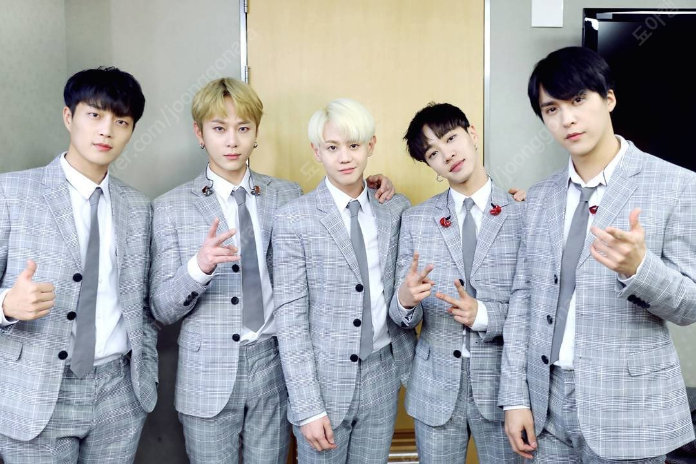

하이라이트(Highlight)는 대한민국의 5인조 보이 그룹으로, 비스트 원년 멤버인 윤두준, 용준형, 양요섭, 이기광, 손동운으로 구성되어 있다. 공식문구로는 '오래보자'가 있으며 공식 팬클럽의 이름은 라이트(Light)다.
데뷔
하이라이트는 2009년 10월 16일 KBS2 뮤직뱅크에서 비스트로 데뷔 무대를 가졌다. 비스트는 데뷔 앨범인 《Beast is the B2ST》로 루키 뮤직 어워드에서 신인상을 수상하고 후속곡인 《Mysteri》로 싸이월드 디지털 뮤직 어워드에서 12월의 루키상을 수상하였다. 그 후 2010년 3월 1일 《Shock Of The New Era》 앨범을 발표하였고 음반 공개 직후 수록곡 전곡이 20위 안으로 진입하는 성과를 이루었다. 음반 공개 3주 만에 비스트는 《Shock》로 3월 25일 엠카운트다운에서 1위를 거머쥐게 되었다. 이후 앨범을 꾸준히 내며 2011년 5월 17일 정규 1집 《Fiction》으로 데뷔 후 공중파 음악프로그램 1위를 하게 되었다. 2011년부터 비스트는 한국 뿐 아니라 일본, 대만 등 여러 각국에서 활동을 하게 되었고 한국 뿐만 아니라 여러 나라에서 큰 인기를 얻었다.